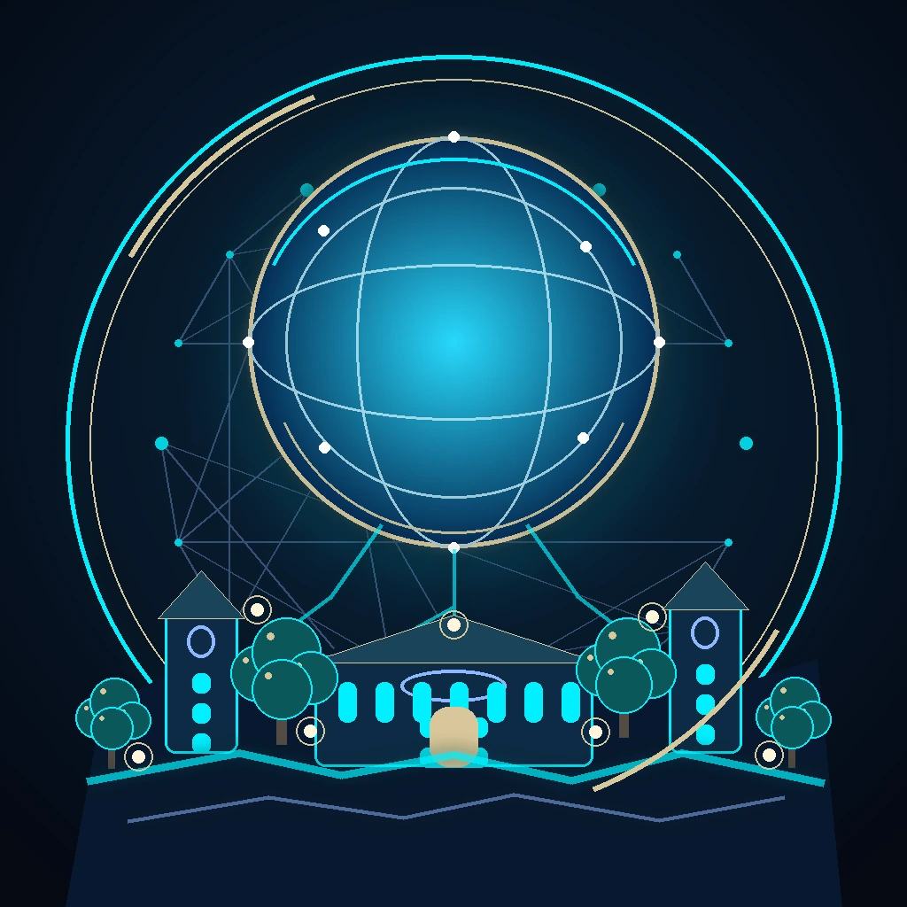

First journeys
Sets out between settlements, learning how each community works.

MYBLING NETWORKBuild Worlds Worth Exploring
A veteran explorer with a builder’s eye and a neighbor’s heart. Daniel moves between settlements, learning how people live, what they need, and what they could make together. His greatest strength is turning scattered resources and bright ideas into places people are proud to call home.
He believes progress lasts when the community helps shape it. Every project is a chance to connect people, share knowledge, and leave a place stronger than before.
Before he became the Community Architect, Daniel was a traveler with a habit of asking one more question: what would help this place thrive?
Across marketplaces, learning centers, technology hubs, and frontier settlements, he learned to listen first, map the resources already at hand, and bring people together around practical ideas. Each stop added another tool to his kit: customer care, operations, creative technology, sustainability, and the patient work of building trust.
Discovering the MYBLING Network gave those lessons a shared purpose. Daniel now helps explorers turn local ideas into lasting systems—and treats every new settlement as a chance to leave the world better than he found it.
Sets out between settlements, learning how each community works.
Builds practical skill in inventory, merchandising, and customer care.
Turns local needs into projects residents can own together.
Connects technology, storytelling, and useful design.
Finds a wider community for sharing knowledge and support.
Guides the next generation of builders and explorers.
In-universe RPG attributes for Daniel’s founder avatar; these are character stats, not measured professional performance.
Builds thriving communities and organizations.
CORE SPECIALIZATION ↗Expert in merchandising, inventory, and customer support.
CORE SPECIALIZATION ↗AI systems, web design, and digital creativity.
CORE SPECIALIZATION ↗Long-term planning and environmental solutions.
CORE SPECIALIZATION ↗Creates projects, systems, and experiences that inspire others.
CORE SPECIALIZATION ↗The game-inspired portfolio and worldbuilding home for Daniel’s character universe, community, and creative work.
A MYBLING faction associated with YOUTHSPARK_Muse and a project repository in Daniel’s GitHub account.
Daniel’s creative space for AI experiments, storytelling, character creation, and development notes.
A living web of shared spaces, knowledge, and care. When Daniel establishes a sanctuary, nearby people and places gain room to flourish. The network grows stronger with every project the community takes on together.
Ideas become plans; plans become places worth gathering in.
New ties form between residents, makers, and neighboring hubs.
Shared resources and thoughtful systems support steady growth.
A thriving home base opens the way to new frontiers.
Learn the world. Listen to the people who call it home.
Raise your first sanctuary and give the community a center.
Bring settlements together through trust and trade.
Put new technologies to work for everyone.
Shape thriving places with a future of their own.
Pass on what you learned. Inspire the next builders.
Make knowledge and mutual aid travel as freely as people do.
Pair new infrastructure with care, repair, and local stewardship.
Help more creators lead projects of their own.
The Sanctuary Network is strongest when every kind of expertise has a place at the table. Companion profiles can be added as the world’s cast takes shape.
Creative RPG Companion
STATUS · ACTIVE COMPANIONCathedral Guardian
STATUS · ACTIVE CHARACTERCharacter details to be revealed.
STATUS · LOCKEDCharacter details to be revealed.
STATUS · LOCKEDEvery world is shaped by the people who choose to build it. Daniel’s journey is a reminder that the rarest power is the ability to help others thrive.
RETURN TO CHARACTER ↑